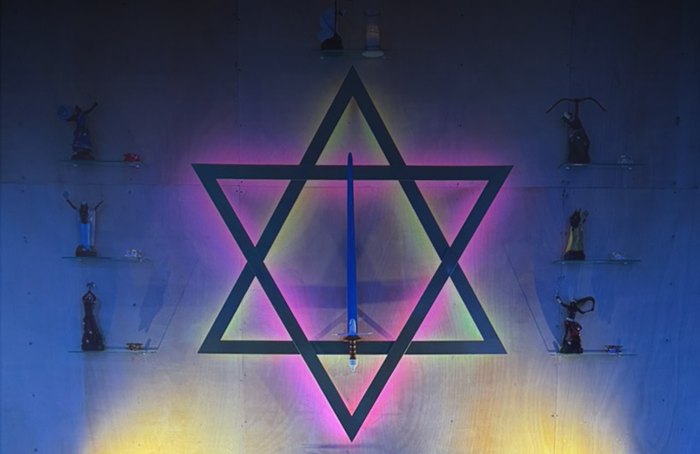
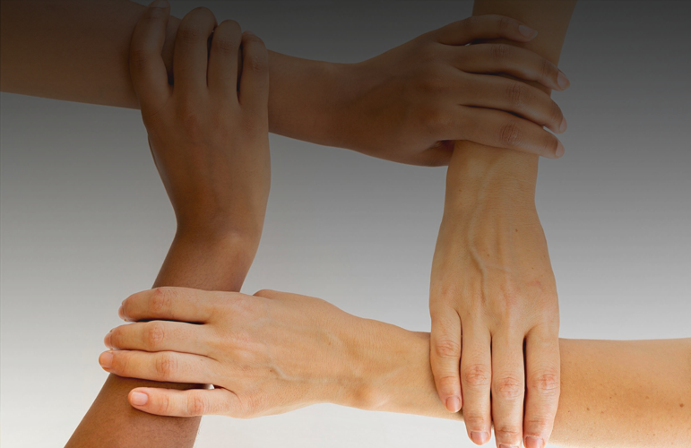
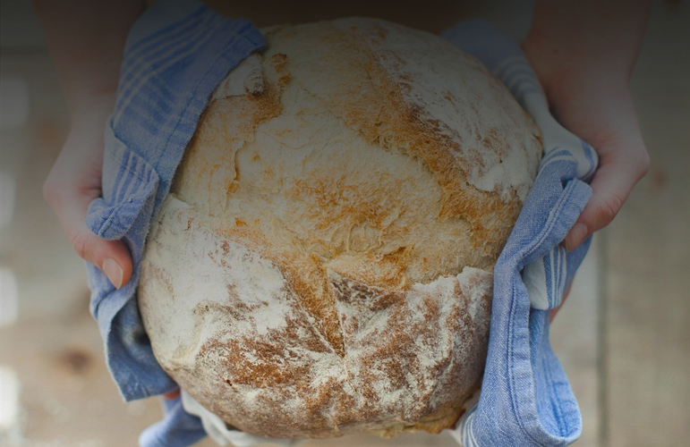

Nossa Casa é muito mais do que um local para eventos de gira e cirurgias espirituais. Aqui, trabalhamos incansavelmente para oferecer projetos e iniciativas sociais que fornecem suporte vital à comunidade. Nossa missão é transformar vidas e proporcionar um espaço de acolhimento e esperança. Quer saber mais sobre como você pode participar e se beneficiar de nossas ações? Consulte o calendário com as datas dos próximos eventos e junte-se a nós nessa jornada de amor e solidariedade.
Esse projeto social da Vó Margarida, visa atender pessoas que passem pelo luto em sua vida. Em nosso entendimento, o luto vai além da morte de um ente querido. Pode surgir por diversas razões: separações, falências, mudanças significativas, doenças, vícios ou até perda de sonhos. Nossa equipe é composta por terapeutas voluntários especializados que porcocionam um espaço seguro para compartilhar experiências e encontrar apoio. Para participar do nosso projeto, fique atento as datas das próximas reuniões no calendário.
Consulte datas
O Hospital Terapêutico é um projeto social que visa oferecer terapias complementares e integrativas, além de suporte psicológico. Aberto a toda a comunidade, o projeto se apresenta como uma opção complementar aos tratamentos de cirurgia espiritual realizados às segundas-feiras. Nossa equipe é composta por terapeutas voluntários especializados em diversas técnicas, incluindo reiki, araporã, auriculoterapia, constelação familiar, entre outras. Para participar do nosso projeto, fique atento às datas das próximas reuniões no calendário.
Consulte datas
É uma iniciativa social da nossa casa para criar uma rede de suporte de profissionais de várias áreas e empresários. Nesse momento iremos fazer a Rodada de negócios que visa atender a corrente e toda a comunidade interessada em fomentar opportunidades. Para participar do nosso projeto, fique atento as datas das próximas reuniões no calendário.
Consulte datas
O Pão solidário da Vó Margarida é um projeto social realizado por um grupo fechado de médiuns voluntários. Esse projeto consiste em cada um dos participantes fazerem um pão em sua própria casa e depois distribuir pessoalmente na comunidade dos arredores da Casa Sol do Oriente. "Para cada irmão de rua que recebe o pão, muitas almas são auxiliadas, e este é o grande trabalho "invisível" que o pão da Vó Margarida faz." - Mensagem do Seu Serra Dourada. Essa ação acontece toda primeira semana de cada mês.